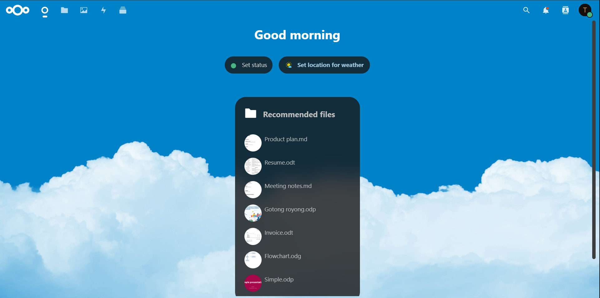

Last edit on: 2023-09-27

Nextcloud is like selfhosted Google Drive with many apps that you can integrate with it. If you using Linux and docker you need to this changes as I using Redis for memory caching on Nextcloud;
Edit this systemctl configuration
sudo nano /etc/sysctl.confAdd this line
vm.overcommit_memory = 1Then reboot your machine to activate the changes. This prevent error/corruption on Redis if the host computer low on memory. DETAIL
I am currenty using it with docker, here is my docker compose;
version: '2'
services:
nextcloud:
image: nextcloud:stable
container_name: nextcloud
restart: unless-stopped
ports:
- YOUR-PORT-A:80
volumes:
- /YOUR-STORAGE-LOCATION/Nextcloud/html:/var/www/html
environment:
- PUID=1000 #optional
- PGID=1000 #optional
- MYSQL_HOST=nextcloud-db
- MYSQL_PASSWORD=YOUR-PASSWORD
- MYSQL_DATABASE=nextcloud
- MYSQL_USER=nextcloud
- REDIS_HOST=nextcloud-redis
- REDIS_HOST_PASSWORD=YOUR-PASSWORD
- REDIS_HOST_PORT=6379
links:
- nextcloud-db
- nextcloud-redis
nextcloud-db:
image: mariadb:10.6
container_name: nextcloud-db
restart: unless-stopped
command: --transaction-isolation=READ-COMMITTED --log-bin=binlog --binlog-format=ROW
ports:
- YOUR-PORT-B:3306
volumes:
- /YOUR-STORAGE-LOCATION/Nextcloud/DB:/var/lib/mysql
environment:
- PUID=1000 #optional
- PGID=1000 #optional
- MYSQL_ROOT_PASSWORD=YOUR-PASSWORD
- MYSQL_PASSWORD=YOUR-PASSWORD
- MYSQL_DATABASE=nextcloud
- MYSQL_USER=nextcloud
nextcloud-redis:
image: redis:alpine
container_name: nextcloud-redis
restart: unless-stopped
command: redis-server --save 30 1 --loglevel warning --requirepass YOUR-PASSWORD
ports:
- YOUR-PORT-C:6379
environment:
- PUID=1000 #optional
- PGID=1000 #optional
volumes:
- /YOUR-STORAGE-LOCATION/Nextcloud/Redis:/data
You need to change some item such as;
| MYSQL_ROOT_PASSWORD | Admin user of MariaDB Container |
| MYSQL_USER | User of MariaDB, here I using Nextcloud. The name must same on both Nexcloud and MariaDB container |
| MYSQL_PASSWORD | The password must same on both Nexcloud and MariaDB container |
| REDIS_HOST_PASSWORD | Password for Redis. You also need ensure it same on Redis conatiner on command line redis, --requirepass YOUR-PASSWORD <--Change it |
| YOUR-PORT | The port you want to expose/access the container |
| YOUR-STORAGE-LOCATION | Where you want to store all the container data |
The container that I using are bare Nextcloud so you need to install app after setup if you want more funtionality. This container also only using HTTP (not secure). You can add HTTPS by reverse proxy and change some line in Nextcloud to overwrite to HTTPS. But for me I only uing it within local server, for public I using Nginx Proxy Manager to ensure it in HTTPS.
After the Docker are up and running to the address of Nextcloud to setup. Example my nextcloud address is 172.22.0.20:35000. (Note: the port is depand on YOUR-PORT-A for acess Nextcloud) Next you setup the admin username and password. By default, it will automatically link the database with mariaDB container (so no need to setup DB). Next it will ask you to install recommaded app or skip the your Nextcloud are finish setup.
Here is my config.php file for reference. (This setup for http only)
<?php
$CONFIG = array (
'htaccess.RewriteBase' => '/',
'memcache.local' => '\\OC\\Memcache\\APCu',
'apps_paths' =>
array (
0 =>
array (
'path' => '/var/www/html/apps',
'url' => '/apps',
'writable' => false,
),
1 =>
array (
'path' => '/var/www/html/custom_apps',
'url' => '/custom_apps',
'writable' => true,
),
),
'memcache.distributed' => '\\OC\\Memcache\\Redis',
'memcache.locking' => '\\OC\\Memcache\\Redis',
'redis' =>
array (
'host' => 'nextcloud-redis',
'password' => 'XXXXX',
'port' => 6379,
),
'instanceid' => 'XXXXX',
'passwordsalt' => 'XXXXX',
'secret' => 'XXXXX',
'trusted_domains' =>
array (
0 => 'XXXXXXX:YOUR-PORT', #Remove if not needed. Change according to your domain. By default auto generate
1 => 'example.com', #Remove if not needed. Change according to your domain
),
'datadirectory' => '/var/www/html/data',
'dbtype' => 'mysql',
'version' => '27.1.1.0',
'overwrite.cli.url' => 'http://XXXXXXX:YOUR-PORT', #Change according to your nextcloud ip. By default auto generate
'overwrite.cli.url' => 'https://example.com', #Remove if not needed. Change according to your domain
'dbname' => 'nextcloud',
'dbhost' => 'nextcloud-db',
'dbport' => '',
'dbtableprefix' => 'oc_',
'mysql.utf8mb4' => true,
'dbuser' => 'nextcloud',
'dbpassword' => 'XXXXX',
'installed' => true,
'app_install_overwrite' =>
array (
0 => 'discretepdfsigner',
),
'logtimezone' => 'Asia/Kuala_Lumpur',#Change according to your location
'default_phone_region' => 'MY', #Change according to your location
);
When setup, on Recommanded app are blank
Cannot login evenr with correct username and password (login loop)
When setup it ask for DB info and DB cannot being connected
Where to edit config.php file and apply the changes
/YOUR-STORAGE-LOCATION/Nextcloud/html/config/config.php
Appstore are blank and I get cURL 28 error on log file
/YOUR-STORAGE-LOCATION/Nextcloud/html/data/appdata_YOUR-INSTANCE-ID/appstore
How do I know if I am slow or Nextcloud is slow
curl https://apps.nextcloud.com/api/v1/categories.json > tmp.json
% Total % Received % Xferd Average Speed Time Time Time Current
Dload Upload Total Spent Left Speed
100 12.1M 100 12.1M 0 0 4216k 0 0:00:02 0:00:02 --:--:-- 4222k
Last background job execution ran X hours ago. Something seems wrong
sudo crontab -e
*/5 * * * * docker exec -u www-data nextcloud php /var/www/html/cron.phpAbout problem and solution: DETAIL
Background Jobs User Manual: DETAIL
Your installation has no default phone region set
'logtimezone' => 'Asia/Kuala_Lumpur',
'default_phone_region' => 'MY',
How to change timeout value
A. Change Installer.php timeout
/YOUR-STORAGE-LOCATION/Nextcloud/html/lib/private/Installer.php$timeout = $this->isCLI ? 0 : 120;B. Change Fetcher.php timeout
/YOUR-STORAGE-LOCATION/Nextcloud/html/lib/private/App/AppStore/Fetcher/Fetcher.php'timeout' => 60,C. Change CurlFactory.php timeout
/YOUR-STORAGE-LOCATION/Nextcloud/html/3rdparty/guzzlehttp/guzzle/src/Handler/CurlFactory.php\CURLOPT_CONNECTTIMEOUT => 150,D. Change Client.php timeout
/YOUR-STORAGE-LOCATION/Nextcloud/html/lib/private/Http/Client/Client.phpRequestOptions::TIMEOUT => 30,E. Change timeout on htaccess
<IfModule Litespeed>
SetEnv noabort 1
SetEnv noconntimeout 1
</IfModule>
I don't want default files are created if new user is added
/YOUR-STORAGE-LOCATION/Nextcloud/html/config/config.php'skeletondirectory' => '',*Discalmer: I am not security nor computer expert use this guide with own risk.
Source: